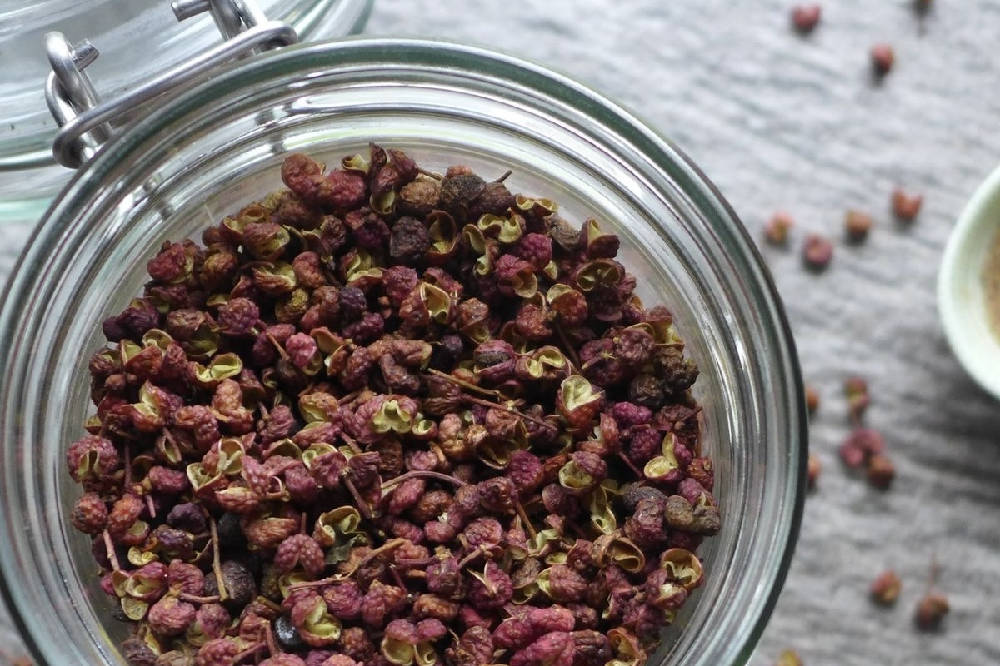
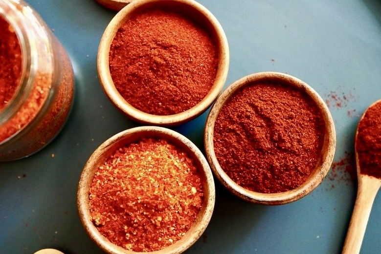
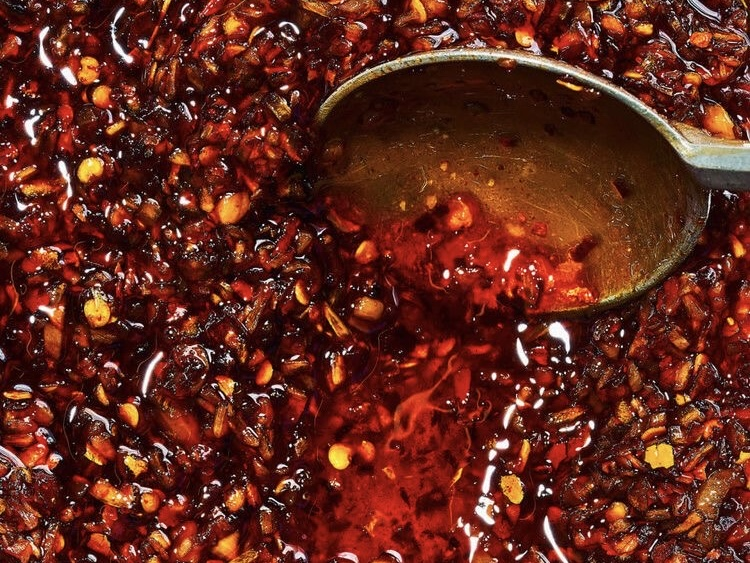

How We Make Our Chili Oil

Low Heat, Long Time
Togarashi, Sichuan pepper, and star anise are slowly heated in oil at 160°C for 30 to 40 minutes. Not fried, not rushed. The goal is to coax each aroma gently into the oil. This is where the depth of the chili oil is built.

The Blend is What Makes It Ours
Three types of chili — each distinct in heat, color, and fragrance — are blended together with a touch of sake. No single chili could achieve this complexity alone. The blend is what makes it ours.

Timing Defines the Result
The oil is brought up to 180°C and poured gradually over the chili blend, stirring as it goes. It is strained immediately while still hot — capturing the essence, leaving behind anything that would cloud the finish. The timing of this moment defines the final result.
Как мы готовим наше масло чили
Низкая температура, долгое время
Тогараши, сычуаньский перец и бадьян медленно прогреваются в масле при 160°C в течение 30–40 минут. Без жарки, без спешки. Цель — мягко раскрыть каждый аромат в масле. Именно здесь закладывается глубина чили-масла.
Именно в смешивании — наша особенность
Три вида чили — каждый со своей остротой, цветом и ароматом — смешиваются с небольшим количеством сакэ. Ни один вид чили в отдельности не способен достичь такой сложности. Именно этот купаж делает его нашим.
Момент определяет результат
Масло разогревается до 180°C и постепенно вливается в смесь чили при постоянном помешивании. Сразу же, пока ещё горячее, процеживается — сохраняя суть и отсеивая всё лишнее. Точность этого момента определяет конечный результат.
Ինչպես ենք պատրաստում մեր չիլի յուղը
Ցածր ջերմություն, երկար ժամանակ
Տոգարաշի, սիչուանի պղպեղ և բադյան դանդաղ տաքացվում են յուղում 160°C-ում 30–40 րոպե։ Առանց տապակելու, առանց շտապելու։ Նպատակն է մեղմորեն բացել յուրաքանչյուր բույր յուղի մեջ։ Այստեղ է դրվում չիլի յուղի խորությունը։
Հենց խառնուրդն է մեր առանձնահատկությունը
Երեք տեսակ չիլի — յուրաքանչյուրն ունի իր կծությունը, գույնը և բույրը — խառնվում են մի կաթիլ սաքեի հետ։ Ոչ մի չիլի առանձին չի կարող հասնել այս բարդությանը։ Հենց այս խառնուրդն է այն դարձնում մերը։
Պահը որոշում է արդյունքը
Յուղը տաքացվում է մինչև 180°C և աստիճանաբար լցվում չիլիի խառնուրդի վրա՝ անընդհատ խառնելով։ Անմիջապես, դեռ տաք ժամանակ, քամվում է — պահպանելով էությունը և հեռացնելով ամեն ինչ, ինչը կխամրեցներ վերջնական արդյունքը։
三種唐辛子の辣油
低温で、じっくりと
鷹の爪、花椒、八角。個性の異なる3つのスパイスを160°Cの油で30〜40分かけてじっくりと加熱する。焦がさず、急がず、香りが静かに油へと溶け込んでいくのを待つ。この時間が、辣油の奥行きを決める。
このブレンドが、うちの辣油をうちの辣油にする
辛味、色、香りとそれぞれ異なる個性を持つ3種類の唐辛子をブレンドし、少量の酒を加えて混ぜ合わせる。一種類では出せない複雑さが、このブレンドから生まれる。
この一瞬が、仕上がりを左右する
熱したオイルを180°Cまで上げ、唐辛子のブレンドに少しずつ注ぎながら素早く混ぜ合わせる。熱いうちにすぐ漉すことで、雑味のない透き通った辣油が完成する。この一瞬の判断が、仕上がりを左右する。